Restored worn black lacquer menus
The room preview now includes the previously approved sidebar and menu materials, with Caudex body text and the existing WeatheredQuill headings. The actual catalogue viewer is retained; the renamed legacy browser receives its original approved menu treatment.
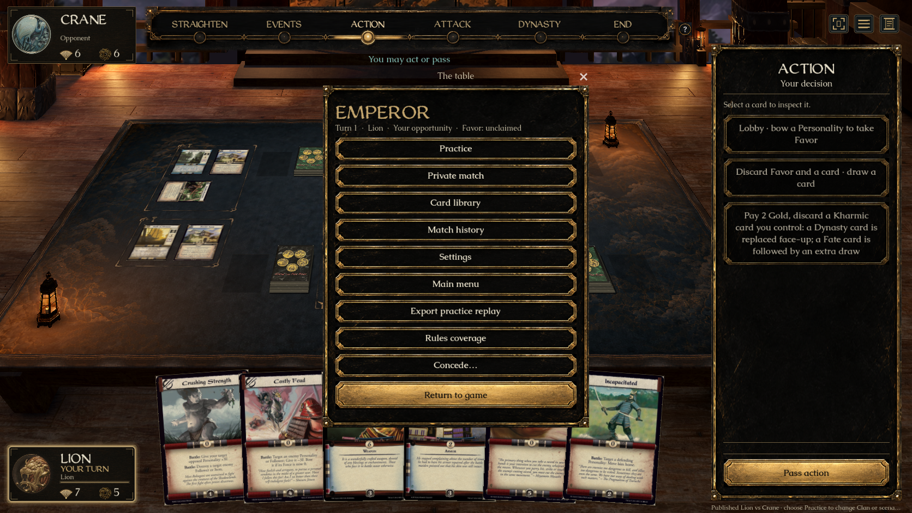
Table menu — verified through Play Latest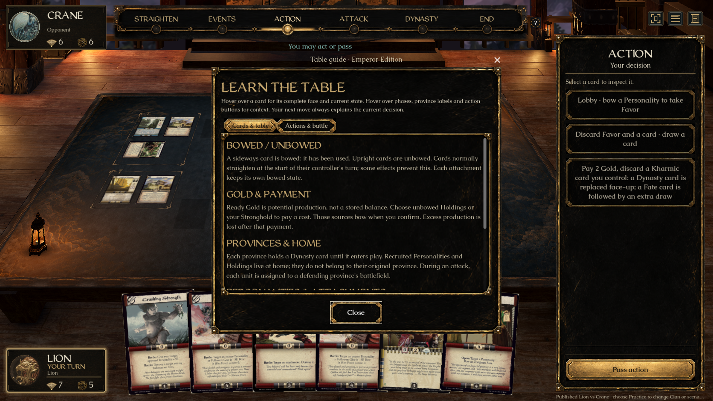
Learn the table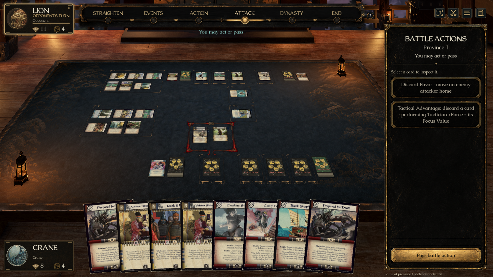
Battle sidebar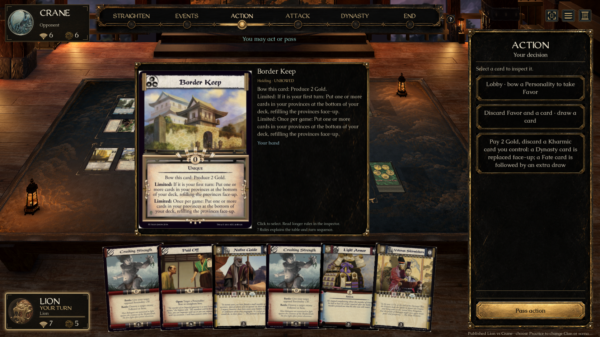
Full card hover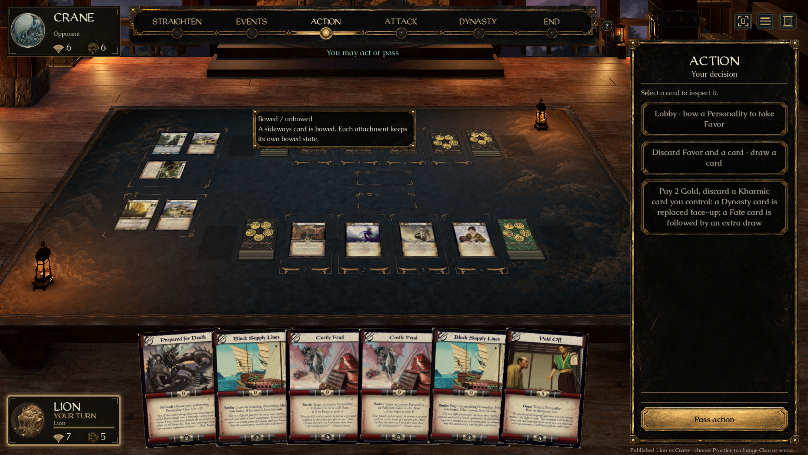
Context tooltip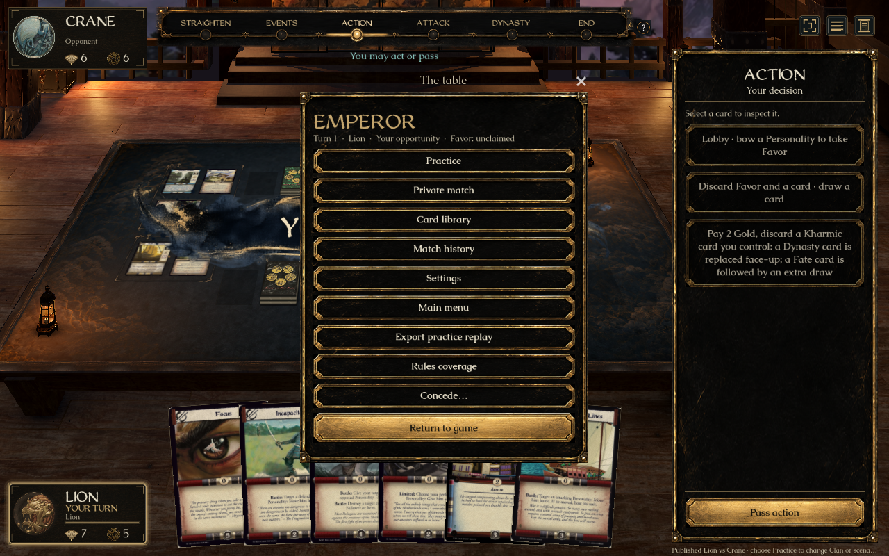
Compact table menu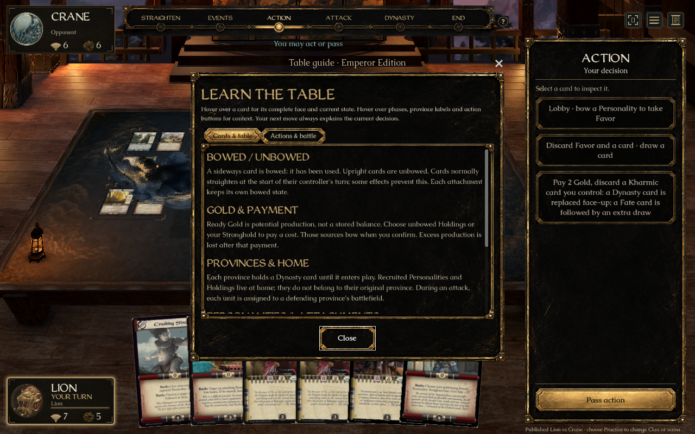
Compact guide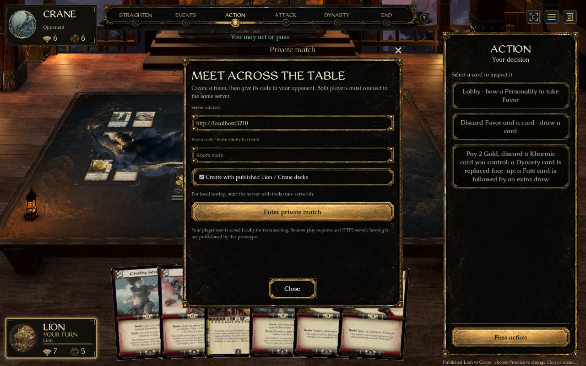
Private match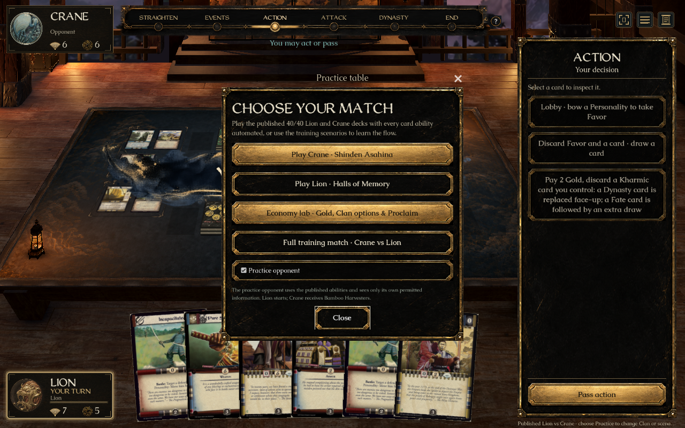
Practice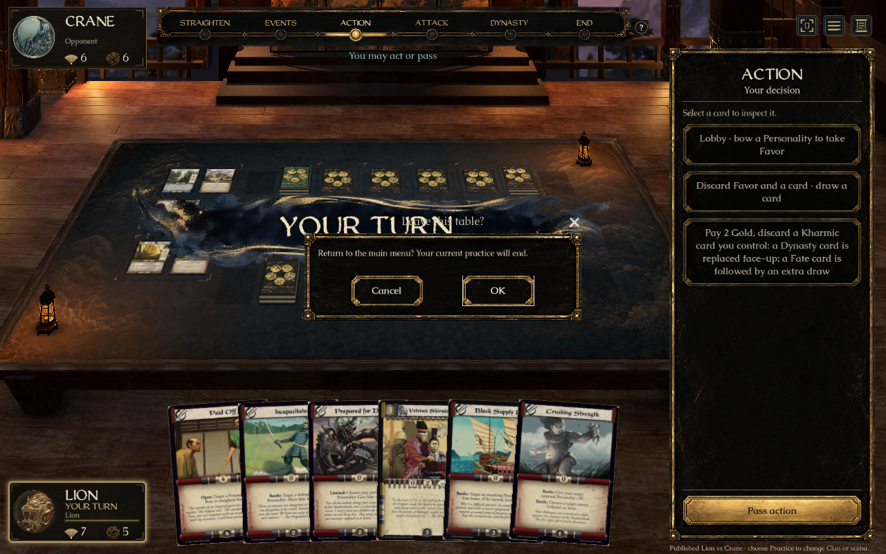
Confirmation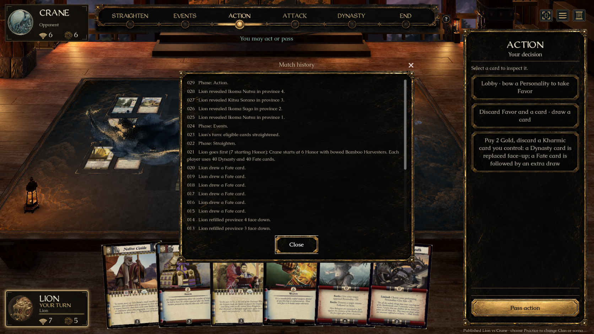
Match history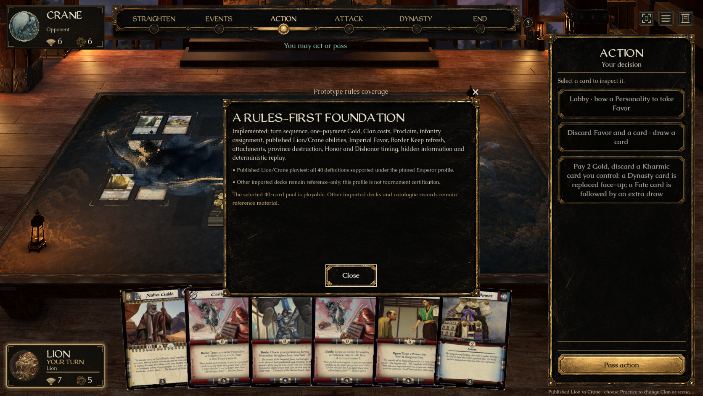
Rules coverage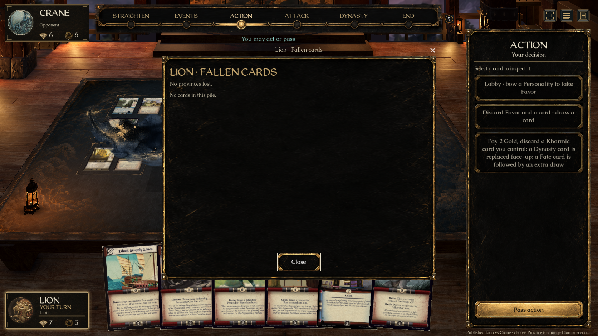
Pile inspection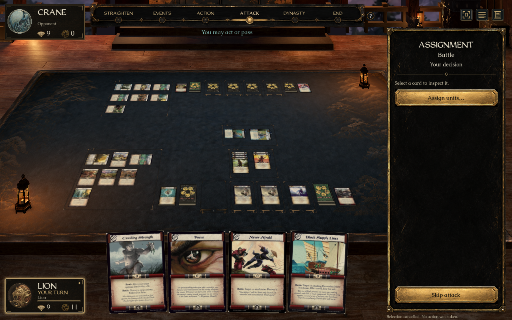
Assignment sidebar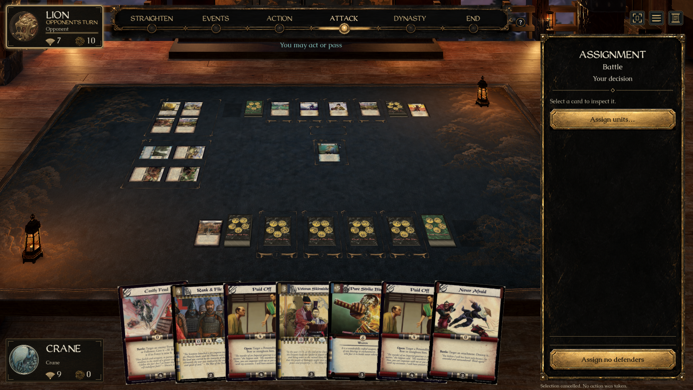
Defense sidebar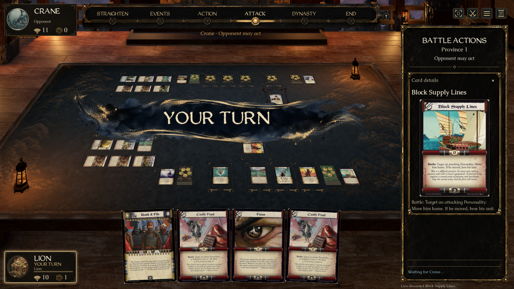
Action confirmation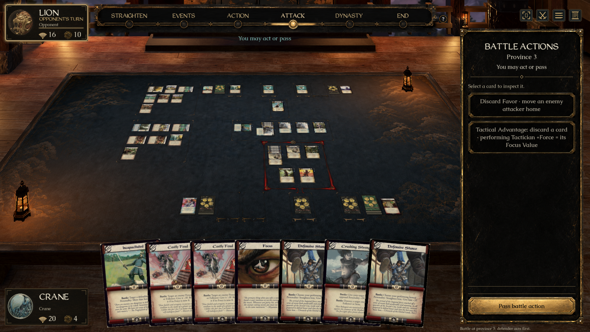
Native toolbar interactionNative macOS captures. Menu dismissal and guide navigation, sidebar selection/deselection, assignment draft preservation, targeted confirmation and toolbar input are checked separately from appearance. The original compact captures include the opening turn announcement behind modal windows; final hover/guide/launcher captures wait for it to clear. No new Windows graphical playtest is claimed.